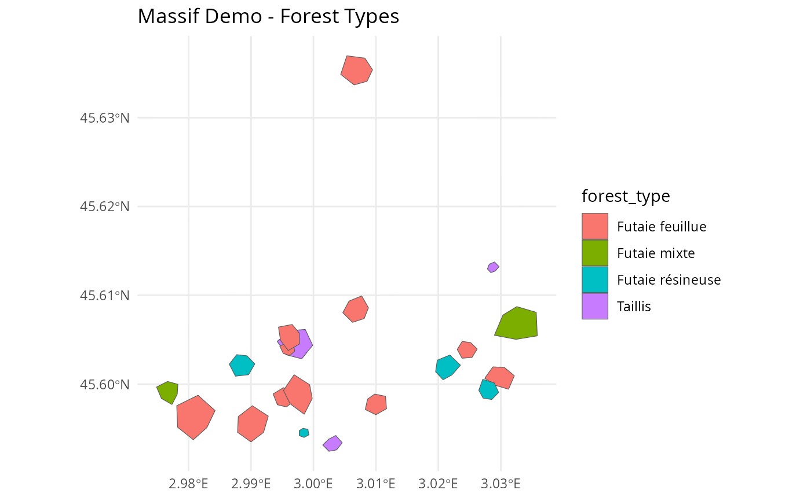

Synthetic forest dataset for demonstrating the nemeton package functionality. Contains 20 forest parcels with associated spatial layers covering a 5km x 5km area in France (Lambert-93 projection).
Extended demonstration dataset containing 20 forest parcels with all 29 indicators across the complete 12-family referential for ecosystem services assessment. This dataset is synthetically generated for package demonstration and testing purposes.
Format
An sf object with 20 features and 5 fields:
- parcel_id
Character. Unique parcel identifier (P01-P20)
- forest_type
Character. Forest type:
"Futaie feuillue" - Broadleaf high forest
"Futaie résineuse" - Coniferous high forest
"Futaie mixte" - Mixed high forest
"Taillis" - Coppice
- age_class
Character. Stand age class:
"Jeune" - Young (< 40 years)
"Moyen" - Middle-aged (40-80 years)
"Mature" - Mature (80-120 years)
"Surannée" - Over-mature (> 120 years)
- management
Character. Management objective:
"Production" - Timber production
"Conservation" - Biodiversity conservation
"Mixte" - Mixed objectives
- surface_ha
Numeric. Parcel area in hectares
- geometry
sfc_POLYGON. Parcel boundaries (EPSG:2154)
An sf object with 20 forest parcels and 100+ columns:
- id
Numeric parcel identifier (1-20)
- name
Parcel name (Parcel_01 to Parcel_20)
- parcel_id
Legacy identifier (P01-P20)
- species
Tree species code (4-letter IFN codes: FASY, PIAB, QUPE, etc.)
- area_ha
Parcel area in hectares
- forest_type
Forest type classification
- age_class
Forest age class
- management
Management objective
- geometry
Spatial geometry (POLYGON, EPSG:2154 - Lambert 93)
Family C - Carbon & Vitality (2 indicators):
- C1
Biomass carbon stock (tC/ha)
- C2
NDVI trend (annual rate of change)
Family B - Biodiversity (3 indicators):
- B1
Protection status (0=none, 1=local, 2=regional, 3=national)
- B2
Structural diversity index
- B3
Landscape connectivity (0-1)
Family W - Water Regulation (3 indicators):
- W1
Hydrographic network density (km/ha)
- W2
Wetland area percentage
- W3
Topographic Wetness Index
Family A - Air Quality & Microclimate (2 indicators):
- A1
Forest cover within 1km buffer (0-1)
- A2
Air quality index
Family F - Soil Fertility (2 indicators):
- F1
Soil fertility class (1-5)
- F2
Slope percentage (erosion risk)
Family L - Landscape & Aesthetics (2 indicators):
- L1
Landscape fragmentation index (0-1)
- L2
Edge-to-area ratio
Family T - Temporal Dynamics (2 indicators):
- T1
Forest ancientness (years)
- T2
Land cover change rate (percentage)
Family R - Risk Management & Resilience (3 indicators):
- R1
Fire risk level (1-5)
- R2
Storm/windthrow risk (1-5)
- R3
Water stress index (0-1)
Family S - Social & Recreational (3 indicators) - NEW v0.4.0:
- S1
Trail density (km/ha)
- S2
Accessibility score (0-100)
- S3
Population proximity (persons within 5/10/20km)
Family P - Productive & Economic (3 indicators) - NEW v0.4.0:
- P1
Standing timber volume (m³/ha)
- P2
Site productivity (m³/ha/yr)
- P3
Timber quality score (0-100)
Family E - Energy & Climate (2 indicators) - NEW v0.4.0:
- E1
Fuelwood potential (tonnes DM/yr)
- E2
CO2 emission avoidance (tCO2eq/yr)
Family N - Naturalness & Wilderness (3 indicators) - NEW v0.4.0:
- N1
Infrastructure distance (m)
- N2
Forest continuity (ha)
- N3
Wilderness composite score (0-100)
Normalized indicators:
- *_norm
Normalized versions (0-100 scale) for all 29 indicators
Family composite indices:
- family_C, family_B, ..., family_N
Aggregated family scores (0-100)
Source
Synthetic data generated with data-raw/massif_demo.R
Synthetically generated using data-raw/generate_extended_demo.R.
Based on:
French National Forest Inventory (IFN) allometric equations
ADEME Base Carbone® emission factors
OpenStreetMap infrastructure data patterns
INSEE population distribution models
Details
The dataset includes:
**Parcels** (massif_demo_units):
- 20 forest parcels (2-20 ha each, 136 ha total)
- Realistic spatial clustering and irregular shapes
- Diverse forest types and management regimes
**Rasters** (25m resolution, in inst/extdata/):
- massif_demo_biomass.tif: Aboveground biomass (50-400 Mg/ha)
- massif_demo_dem.tif: Digital Elevation Model (350-700m)
- massif_demo_landcover.tif: Land cover (6 classes, 85% forest)
- massif_demo_species_richness.tif: Species richness (5-45 species)
**Vector layers** (in inst/extdata/):
- massif_demo_roads.gpkg: 5 roads (types: Départementale, Forestière, Chemin)
- massif_demo_water.gpkg: 3 water courses (types: Ruisseau, Rivière, Torrent)
All spatial data use Lambert-93 projection (EPSG:2154).
Generated with set.seed(42) for reproducibility.
This dataset extends massif_demo_units with complete indicator coverage
across all 12 families in the nemeton ecosystem services framework. It includes:
29 primary indicators measuring different ecosystem service dimensions
29 normalized indicators (0-100 scale) for direct comparison
12 family composite indices aggregating related indicators
Spatial coverage: Synthetic 5km × 5km forest area in Lambert 93
Realistic value ranges: Based on French forest inventory data (IFN)
The data generation methodology combines:
Allometric models from IFN for volume calculations
ADEME emission factors for climate indicators
Spatial relationships (accessibility, naturalness, continuity)
Stochastic variation to simulate real-world heterogeneity
Data Generation
The dataset was created synthetically to represent typical French forest landscapes: - Biomass: Spatial gradient with patches and noise - Topography: Realistic elevation with gentle slopes - Land cover: Spatially coherent forest/non-forest classes - Species richness: Correlated with biomass and habitat diversity - Infrastructure: Sinuous roads and topography-following streams
Usage
Use massif_demo_layers to load all associated spatial layers:
# Load parcels
data(massif_demo_units)
# Load all layers
layers <- massif_demo_layers()
# Compute indicators
results <- nemeton_compute(massif_demo_units, layers, indicators = "all")This dataset is ideal for:
Package vignettes demonstrating multi-criteria analysis
Testing visualization functions (radar plots, correlation matrices)
Prototyping composite indices and decision support tools
Educational examples of ecosystem services assessment
Families v0.4.0
The complete 12-family referential includes:
v0.2.0: C, W, F, L (biophysical services)
v0.3.0: B, A, T, R (biodiversity, climate, temporal, risks)
v0.4.0: S, P, E, N (social, productive, energy, naturalness)
See also
massif_demo_layers, nemeton_compute
massif_demo_units for the base dataset without indicators.
create_family_index for creating family composites.
normalize_indicators for indicator normalization.
nemeton_radar for visualizing the 12-family profile.
Examples
# Load the demo dataset
data(massif_demo_units)
# Inspect parcels
print(massif_demo_units)
#> Simple feature collection with 20 features and 88 fields
#> Geometry type: POLYGON
#> Dimension: XY
#> Bounding box: xmin: 698041.8 ymin: 6499215 xmax: 702793.8 ymax: 6504159
#> Projected CRS: RGF93 v1 / Lambert-93
#> First 10 features:
#> parcel_id forest_type age_class management species age
#> 1 P01 Futaie mixte Mature Mixte FASY 68
#> 2 P02 Futaie résineuse Moyen Production PIAB 33
#> 3 P03 Futaie feuillue Surannée Conservation QUPE 104
#> 4 P04 Futaie feuillue Surannée Production ABAL 166
#> 5 P05 Futaie résineuse Moyen Production PISY 47
#> 6 P06 Futaie résineuse Mature Production QURO 79
#> 7 P07 Futaie feuillue Mature Mixte PINI 75
#> 8 P08 Futaie feuillue Mature Production LADE 71
#> 9 P09 Futaie mixte Moyen Production PSME 48
#> 10 P10 Taillis Surannée Production CABE 165
#> establishment_year density height dbh volume strata fertility climate
#> 1 1958 266 30.3 45.8 557.7 4 1 continental
#> 2 1993 465 30.4 57.5 1541.7 1 3 atlantique
#> 3 1922 128 31.7 41.7 232.7 2 2 atlantique
#> 4 1860 104 29.9 42.6 186.1 2 1 atlantique
#> 5 1979 324 27.5 51.5 779.5 2 2 atlantique
#> 6 1947 281 38.6 76.1 2072.1 2 1 atlantique
#> 7 1951 184 33.9 47.1 456.5 2 3 continental
#> 8 1955 169 27.2 38.8 228.3 3 2 montagnard
#> 9 1978 369 24.8 34.0 349.0 4 3 atlantique
#> 10 1861 632 25.7 34.0 619.4 2 2 montagnard
#> surface_ha area_ha A1 A1_norm A2 A2_norm B1 B1_norm
#> 1 4.989211 4.989211 0.5293842 32.76917 41.31477 15.769170 0 0.00000
#> 2 5.867935 5.867935 0.6934514 56.20735 54.25911 83.462924 0 0.00000
#> 3 6.557777 6.557777 1.0000000 100.00000 40.10522 9.443733 2 66.66667
#> 4 9.989553 9.989553 0.8866660 83.80943 47.07552 45.895638 0 0.00000
#> 5 5.906395 5.906395 0.5849180 40.70258 48.98128 55.861977 1 33.33333
#> 6 1.048296 1.048296 0.3000000 0.00000 56.56038 95.497643 2 66.66667
#> 7 17.079363 17.079363 0.7493859 64.19798 57.42131 100.000000 3 100.00000
#> 8 11.414577 11.414577 0.6541358 50.59082 46.65910 43.717908 2 66.66667
#> 9 16.105209 16.105209 0.5931199 41.87426 52.15218 72.444518 0 0.00000
#> 10 10.733433 10.733433 0.7438372 63.40531 41.21596 15.252433 1 33.33333
#> B2 B2_norm B3 B3_norm C1 C1_norm C2
#> 1 2.556369 41.55096 0.8262637 90.87085 258.9182 91.81550 0.032799533
#> 2 2.387431 35.94171 0.3583569 17.21558 228.1229 78.28157 0.016314059
#> 3 2.482645 39.10309 0.6591732 64.56840 193.5217 63.07502 0.030853722
#> 4 2.177975 28.98713 0.6150537 57.62336 187.2273 60.30875 0.005740350
#> 5 2.455282 38.19456 0.6392320 61.42937 269.4859 96.45981 0.017942008
#> 6 1.853111 18.20065 0.5374482 45.40713 277.5413 100.00000 -0.020873050
#> 7 3.716395 80.06740 0.8842580 100.00000 232.0788 80.02013 0.007636006
#> 8 2.808751 49.93083 0.7366941 76.77131 192.3779 62.57234 0.023693958
#> 9 3.800323 82.85408 0.3922287 22.54749 126.5075 33.62356 -0.031114446
#> 10 2.973928 55.41522 0.6031365 55.74742 132.7189 36.35337 0.007811520
#> C2_norm E1 E1_norm E2 E2_norm F1 F1_norm F2
#> 1 98.02844 0.6332431 48.4520928 1.2862944 37.35401 3 50 15.017516
#> 2 72.74375 0.5003880 0.1410856 1.1352980 30.18071 3 50 18.802915
#> 3 95.04404 0.5000000 0.0000000 1.0372173 25.52125 3 50 8.778060
#> 4 56.52626 0.5000000 0.0000000 1.6796913 56.04287 4 75 16.643021
#> 5 75.24062 0.5239562 8.7113699 0.5000000 0.00000 4 75 23.180358
#> 6 15.70780 0.5000000 0.0000000 0.5000000 0.00000 2 25 6.919386
#> 7 59.43373 0.7749997 100.0000000 0.9112013 19.53469 5 100 8.984532
#> 8 84.06271 0.5537554 19.5474302 1.8505265 64.15863 4 75 16.153539
#> 9 0.00000 0.7549689 92.7160383 2.6049801 100.00000 1 0 22.044466
#> 10 59.70293 0.6396033 50.7648918 0.5000000 0.00000 3 50 18.450890
#> F2_norm family_A family_B family_C family_E family_F family_L family_N
#> 1 63.53406 24.26917 44.14061 94.92197 42.903050 56.76703 31.33202 50.88637
#> 2 79.54881 69.83514 17.71910 75.51266 15.160900 64.77440 88.45910 23.50773
#> 3 37.13702 54.72187 56.77938 79.05953 12.760627 43.56851 64.18903 29.82359
#> 4 70.41103 64.85253 28.87016 58.41750 28.021436 72.70551 56.54965 82.49126
#> 5 98.06830 48.28228 44.31909 85.85022 4.355685 86.53415 29.12421 24.91877
#> 6 29.27359 47.74882 43.42482 57.85390 0.000000 27.13680 73.96207 18.79035
#> 7 38.01053 82.09899 93.35580 69.72693 59.767345 69.00527 31.81030 52.46156
#> 8 68.34019 47.15437 64.45627 73.31753 41.853032 71.67010 54.94544 48.98929
#> 9 93.26272 57.15939 35.13385 16.81178 96.358019 46.63136 20.22083 66.82370
#> 10 78.05951 39.32887 48.16532 48.02815 25.382446 64.02976 56.68762 32.42439
#> family_P family_R family_S family_T family_W L1 L1_norm L2
#> 1 47.68739 32.09087 24.30425 54.11307 9.825682 0.2521898 10.97026 0.3017459
#> 2 86.78162 24.35791 24.18268 46.60595 50.880574 0.5743217 100.00000 0.3891689
#> 3 46.78139 42.35100 37.86009 77.38554 23.501831 0.3701597 43.57440 0.4164985
#> 4 48.20880 26.49766 17.50914 38.82146 49.612081 0.3389725 34.95499 0.3934184
#> 5 75.19072 66.66667 81.17865 24.74926 61.265609 0.3539412 39.09197 0.1889777
#> 6 14.75698 13.46698 61.86987 55.77872 4.498593 0.3858981 47.92413 0.4691661
#> 7 86.90201 49.06818 20.55367 31.18672 37.643152 0.3373054 34.49422 0.2235316
#> 8 51.09994 52.78169 59.97402 63.97211 43.968175 0.4188532 57.03213 0.3057835
#> 9 90.63200 59.19507 21.36929 74.07487 44.359948 0.3116164 27.39438 0.1678045
#> 10 73.61026 45.38187 81.27627 100.00000 58.656744 0.4423928 63.53794 0.2953117
#> L2_norm N1 N1_norm N2 N2_norm N3 N3_norm
#> 1 51.69377 1823.0542 66.05463 200.27051 24.049640 73.73125 62.55485
#> 2 76.91820 670.1452 23.10333 125.83536 14.560032 52.89941 32.85982
#> 3 84.80367 1365.9276 49.02451 101.35012 11.438453 50.19713 29.00781
#> 4 78.14431 2734.2239 100.00000 384.00619 47.473781 100.00000 100.00000
#> 5 19.15645 628.5385 21.55329 238.93704 28.979168 46.84107 24.22387
#> 6 100.00000 1259.2921 45.05183 20.07441 1.076754 37.03275 10.24246
#> 7 29.12638 1368.0672 49.10422 474.54786 59.016780 64.40716 49.26369
#> 8 52.85875 1237.7060 44.24765 432.85168 53.701007 64.23566 49.01923
#> 9 13.04729 1214.2662 43.37441 796.01449 100.000000 69.90222 57.09670
#> 10 49.83731 1339.1892 48.02838 237.28325 28.768329 44.21217 20.47647
#> P1 P1_norm P2 P2_norm P3 P3_norm R1 R1_norm R2
#> 1 383.7837 79.52972 2.000000 0.00000 65.29495 63.53244 1 0 4
#> 2 303.2654 60.34486 10.150362 100.00000 84.57162 100.00000 1 0 2
#> 3 268.2949 52.01252 4.796243 34.30821 60.26851 54.02344 2 25 3
#> 4 250.9696 47.88446 6.134844 50.73203 56.03258 46.00991 1 0 3
#> 5 317.5492 63.74822 8.705667 82.27447 73.76151 79.54946 3 50 3
#> 6 50.0000 0.00000 4.414458 29.62394 39.45421 14.64700 1 0 1
#> 7 469.6968 100.00000 9.919209 97.16390 65.30007 63.54214 4 75 3
#> 8 335.6093 68.05134 4.231110 27.37436 62.30397 57.87411 2 25 4
#> 9 457.5569 97.10745 8.610862 81.11127 81.22943 93.67726 4 75 5
#> 10 387.6384 80.44816 7.831253 71.54595 68.09875 68.83666 4 75 2
#> R2_norm R3 R3_norm S1 S1_norm S2 S2_norm
#> 1 75 0.3397302 21.272605 0.473262981 30.4048558 49.06710 36.33387
#> 2 25 0.5299777 48.073743 0.004570495 0.2936322 77.80352 72.25440
#> 3 50 0.5582243 52.052986 0.963719475 61.9143116 51.13707 38.92133
#> 4 50 0.3980824 29.492982 0.817609054 52.5274243 20.00000 0.00000
#> 5 50 0.8985756 100.000000 1.162277601 74.6707102 75.09220 68.86525
#> 6 0 0.4755124 40.400942 1.556537495 100.0000000 70.17784 62.72230
#> 7 50 0.3463454 22.204529 0.224703022 14.4360816 57.77993 47.22491
#> 8 75 0.6028886 58.345075 1.039444491 66.7792774 69.31990 61.64987
#> 9 100 0.2070778 2.585199 0.227250712 14.5997583 59.60649 49.50811
#> 10 25 0.4453061 36.145624 1.448289535 93.0455926 76.73387 70.91733
#> S3 S3_norm T1 T1_norm T2 T2_norm W1
#> 1 1904.090 6.174013 88.06364 57.29425 11.324896 50.93189 0.1862923
#> 2 1000.000 0.000000 82.82317 53.44804 9.198844 39.76386 0.5393849
#> 3 2866.255 12.744614 126.47324 85.48470 14.819030 69.28638 0.4476438
#> 4 1000.000 0.000000 62.19125 38.30539 9.117684 39.33753 1.1437187
#> 5 15643.478 100.000000 10.00000 0.00000 11.052026 49.49852 1.0737964
#> 6 4351.499 22.887318 130.42042 88.38171 6.040972 23.17574 0.0000000
#> 7 1000.000 0.000000 77.26310 49.36727 4.104996 13.00617 0.2170906
#> 8 8540.351 51.492899 136.43831 92.79850 8.319690 35.14572 0.2103747
#> 9 1000.000 0.000000 126.99400 85.86691 13.485767 62.28283 0.7851203
#> 10 12695.145 79.865898 146.25039 100.00000 20.665966 100.00000 1.3757609
#> W1_norm W2 W2_norm W3 W3_norm
#> 1 9.782561 1.119890 10.45221 5.089475 9.242271
#> 2 28.324119 8.374436 78.16072 8.400556 46.156887
#> 3 23.506618 2.896998 27.03841 6.050851 19.960465
#> 4 60.058825 4.913373 45.85774 8.110192 42.919675
#> 5 56.387074 3.125075 29.16711 13.072421 98.242638
#> 6 0.000000 0.000000 0.00000 5.470996 13.495779
#> 7 11.399838 10.714380 100.00000 4.397684 1.529617
#> 8 11.047174 6.589757 61.50386 9.584233 59.353487
#> 9 41.228147 4.205627 39.25218 8.978432 52.599520
#> 10 72.243796 7.721442 72.06616 7.100273 31.660276
#> geometry
#> 1 POLYGON ((698299.9 6499928,...
#> 2 POLYGON ((701702.2 6500418,...
#> 3 POLYGON ((702240.4 6500270,...
#> 4 POLYGON ((700641.3 6504129,...
#> 5 POLYGON ((699268.2 6500307,...
#> 6 POLYGON ((699943.5 6499421,...
#> 7 POLYGON ((698500.5 6499360,...
#> 8 POLYGON ((699061.9 6499649,...
#> 9 POLYGON ((702258.5 6500666,...
#> 10 POLYGON ((699897.1 6500739,...
summary(massif_demo_units$surface_ha)
#> Min. 1st Qu. Median Mean 3rd Qu. Max.
#> 1.048 4.047 5.887 6.801 10.149 17.079
table(massif_demo_units$forest_type)
#>
#> Futaie feuillue Futaie mixte Futaie résineuse Taillis
#> 11 2 4 3
# Plot parcels
if (require("ggplot2")) {
ggplot(massif_demo_units) +
geom_sf(aes(fill = forest_type)) +
theme_minimal() +
labs(title = "Massif Demo - Forest Types")
}
#> Loading required package: ggplot2

if (FALSE) { # \dontrun{
# Complete workflow example
library(nemeton)
# 1. Load data
data(massif_demo_units)
layers <- massif_demo_layers()
# 2. Compute all indicators
results <- nemeton_compute(
massif_demo_units,
layers,
indicators = "all",
preprocess = TRUE
)
# 3. Normalize indicators
normalized <- normalize_indicators(
results,
indicators = c("carbon", "biodiversity", "water"),
method = "minmax"
)
# 4. Create ecosystem health index
health <- create_composite_index(
normalized,
indicators = c("carbon_norm", "biodiversity_norm", "water_norm"),
weights = c(0.4, 0.4, 0.2),
name = "ecosystem_health"
)
# 5. Visualize
plot_indicators_map(
health,
indicators = "ecosystem_health",
palette = "RdYlGn",
title = "Ecosystem Health - Massif Demo"
)
} # }
if (FALSE) { # \dontrun{
# Load the extended demo dataset
data("massif_demo_units")
# Explore structure
library(sf)
plot(massif_demo_units["family_S"]) # Social services
plot(massif_demo_units["family_E"]) # Energy services
# Create 12-axis radar plot for parcel 1
library(nemeton)
nemeton_radar(
massif_demo_units,
unit_id = 1,
mode = "family"
)
# Compute correlations across all 12 families
cor_matrix <- compute_family_correlations(massif_demo_units)
plot_correlation_matrix(cor_matrix)
# Identify multi-service hotspots
hotspots <- identify_hotspots(
massif_demo_units,
threshold = 75,
min_families = 6
)
# Summary statistics
summary(massif_demo_units[, c("family_S", "family_P", "family_E", "family_N")])
} # }